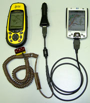
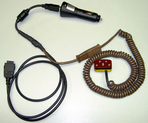
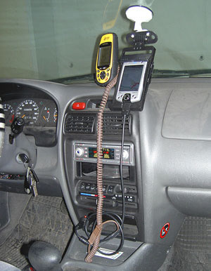

Вы посетитель:
25 февраля 2004 г.
|  | Как самостоятельно изготовить универсальный кабель для связки GPS Magellan модели «Meridian GPS» с КПК iPAQ для обмена данными между ними и одновременной подзарядкой от автомобиля.
Актуально для КПК iPAQ серий H2200, H3800, H3900, H5400, H5500. |
Такой универсальный кабель позволит:

обеспечить обмен информацией между карманным компьютером iPAQ HP-2210 (в моем случае), а также серий H2200, H3800, H3900, H5400, H5500 с GPS-приемником фирмы Magellan, модели «Meridian GPS»,
Разумеется, такой кабель будет прекрасно работать и только на обмен данными между вышеупомянутыми устройствами без их подзарядки или только для их подзарядки (одновременно или по отдельности) без обмена данными.
Те, кто использует навигационную систему в автомобиле на базе КПК и GPS-приемника, знают, что обычный кабель данных, соединяющий два устройства, занимает разъемы, к которым должны подключаются шнуры питания. Поэтому, для подзарядки устройств, приходится отключать от них кабель данных. А это в свою очередь делает невозможным навигацию.
Перешерстив весь интернет, я так и не нашел внятного описания как сделать такой кабель. Его, конечно, можно купить, но стоит он недешево около 50$ + пересылка.
Поэтому, а еще, потому что мне было просто интересно, я решился разобраться с проблемой самостоятельно. Кое в чем мне помогла статья про аналогичный кабель для GPS eTrex. За что автору особое спасибо.
Я, разумеется, не претендую на истину в последней инстанции. Но я изготовил такой кабель для себя и успешно им пользуюсь уже в течение довольно длительного времени. И я знаю, что он нужен многим, поэтому и хочу поделиться ...опытом. Если кому-то это пригодится, буду рад. Возможно, для кого-то окажутся полезными лишь отдельные главы этой статьи.
Если возникнут вопросы, пожелания, критика, замечания – пишите.
Статью, и (или) ее отдельные части, можно свободно распространять в некоммерческих целях, но, не внося в нее без моего согласия никаких изменений и при обязательной ссылке на автора (то бишь - меня
) и первоначальный источник публикации.
Предупреждаю, что не несу никакой ответственности за прямой или косвенный ущерб от использования данной статьи. Если вы решите воспользоваться тем, что здесь написано, вы осознаете и соглашаетесь с тем, что делаете это на свой собственный страх и риск.
Работа требует некоторых навыков, терпения и аккуратности. «Лишь бы живо» вряд ли получится. Подумайте об этом и взвесьте свои возможности, прежде чем решиться. Может быть игра не стоит свеч. Ведь существует и альтернатива.
Итак: